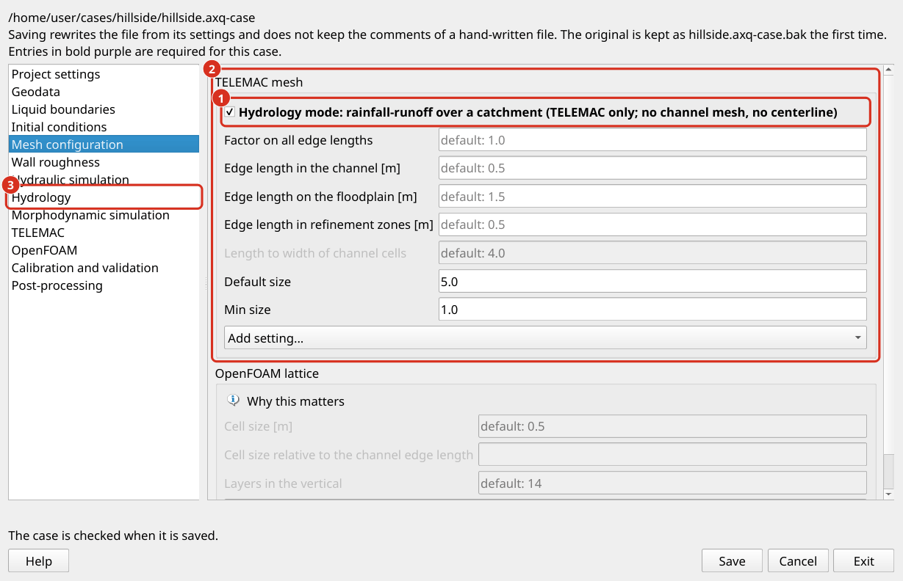
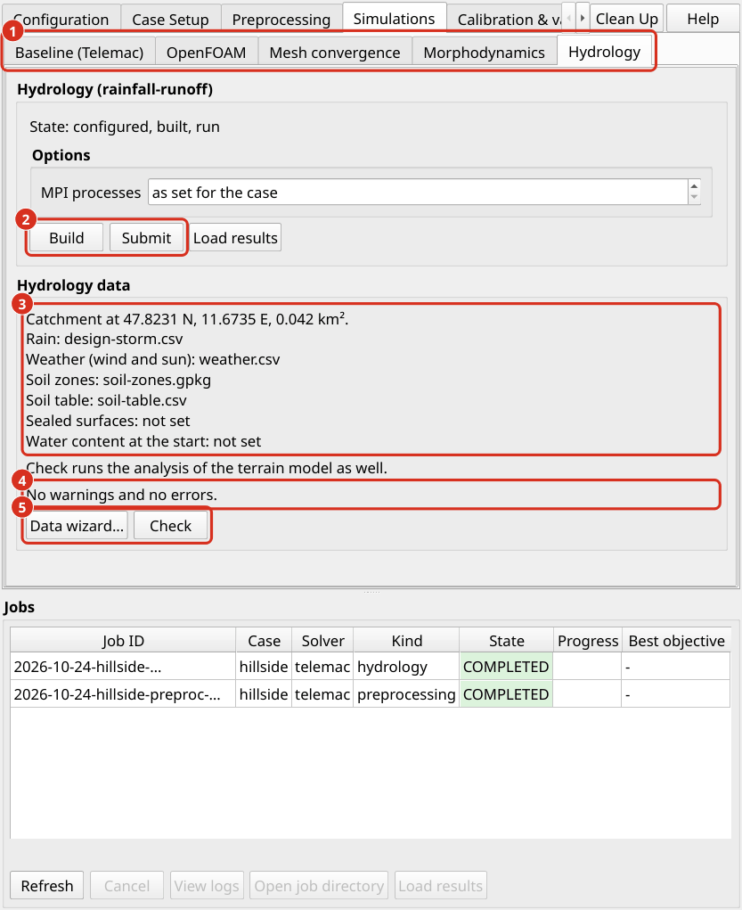

Hydrology
A hydrology simulation computes how rain on a catchment becomes runoff. Rain falls on every node of the mesh, part of it infiltrates into the soil, part of the surface water evaporates, and the rest flows over the terrain to the outlet. TELEMAC-2D solves the shallow water equations over the whole catchment, so that the hydrograph at the outlet, the water depths on the hillslopes and the flooded areas in the valley come from one model. This approach is called a hydrodynamic rainfall-runoff model, or rain on grid (Caviedes-Voullième et al. 2012, Fernández-Pato et al. 2016). It suits catchments up to some tens of square kilometers, flash floods, and fields and plots on which the path of the runoff matters, for example for soil erosion.
The hydrology mode is TELEMAC only. It is switched on in the case settings, with the check box Hydrology mode on the page Mesh configuration or on the page Hydrology (Hydrology), and runs on the sub-tab Simulations > Hydrology.


The case settings in hydrology mode. (1) The check box Hydrology mode at the top of the frame TELEMAC mesh: it gives the mesh near-equal triangles and grays out the settings the mode does not use, such as the length-to-width ratio of channel cells. (2) The edge lengths of the mesh: Default size outside the mesh zones; inside a zone its own Max Edge Length (m), else the edge length of its zone type. (3) The page Hydrology with rain, soil, wind and sun and the outlet; its switch and the check box Hydrology mode are one switch.
What differs from a river case. This section can be read on its own. A hydrology case uses the same case file, the same preprocessing, the same job system and the same postprocessing as a river case, which the preceding sections describe. Several of their steps, however, work differently in the hydrology mode or do not apply to it:
Step |
River case |
Hydrology case |
|---|---|---|
What drives the flow |
The discharge at the inflow lines and the water level at the outflow lines (Liquid boundaries). |
The rain on every node. The case needs outflow lines only; inflow lines are optional. |
Model outline |
The region of interest around the wetted area (Geodata). |
The drainage divide of the catchment, or the edges of a field (Boundaries and outlet). |
Mesh |
Triangles stretched along the channel centerline (Mesh configuration). |
Near-equal triangles everywhere; no centerline. |
Initial state |
A dry bed with water at the inflow, or a pre-wetted channel (Initial conditions). |
A dry catchment. The initial water content of the soil is the initial condition that matters. |
Numerical kernel |
Finite elements by default (TELEMAC choices). |
Finite volumes with a reconstruction made for thin water films (Concept). |
Simulation |
A steady dry run, then hotstarts and unsteady runs (Hydraulic simulations). |
One unsteady run over the storm and the time after it, which also carries the hydrographs of the inflow lines. |
Is the run complete? |
Inflow and outflow balance ( |
The water balance: rain, infiltration, evaporation, outflow and the water left on the catchment. |
Shallowest water shown |
1 cm. |
1 mm, because sheet flow is millimeters deep. |
Mesh convergence study |
Available (Mesh convergence). |
Not available; a manual procedure replaces it (Mesh resolution, calibration and limits). |
Sediment transport |
Available (Morphodynamic simulations). |
Not available; the build refuses a case that asks for it. |
Calibration and validation |
Available (Calibration & validation). |
Not yet available (Mesh resolution, calibration and limits). |
The example case. example-agrohydrology is an arable field of 5.6 ha on a hillslope in Lower Bavaria under a rain of 42.1 mm in 7 hours (Example cases). Its guide (README.md in the folder of the example) walks through every step of this section in the plugin: the checkup, the build, the run of 7 to 8 minutes on 4 processor cores, the loading of the result, and a second run on a more permeable soil. On the Case Setup tab, Example case… downloads it; in a terminal, the command is:
axqua example get example-agrohydrology --folder <folder>
The workflow in brief. A hydrology case is set up and run in six steps, each of which is explained in a subsection below:
Create the case on the Case Setup tab and switch on Hydrology mode in its settings (Case setup).
Collect rain, soil and weather data with the Data wizard… on the sub-tab Simulations > Hydrology (Data setup, Wind and evaporation).
Draw the outflow lines and select the outlet condition (Boundaries and outlet).
Check the data and build the model on the Preprocessing tab (Preprocessing).
Run the storm with Submit on the sub-tab Simulations > Hydrology (Run and results).
Load the result, read the hydrograph and the water balance, and check the mesh resolution (Run and results, Mesh resolution, calibration and limits).
In a terminal, the same steps are as follows; the last command converts the result for ParaView and VisIt:
axqua hydrology check <case-file> # the checkup, with the terrain
axqua <case-file> # build the model
axqua submit <case-file> --kind hydrology # run the storm as a job
axqua export <case-file> --result r2d-hydrology.slf
Concept
Rain on grid. TELEMAC-2D solves the depth-averaged shallow water equations, which express the conservation of mass and momentum of a water layer over the terrain (Hervouet 2007). In a river case, water enters the model through its inflow lines. In a hydrology case, the rain enters as a source term of the mass equation at every node, and the infiltration and the evaporation leave as sinks. The water then flows downslope under gravity against the resistance of the ground. Sheet flow on a hillslope is only millimeters deep, so its resistance is that of the soil surface, its clods, crop residue and vegetation, which hydrologists express as a Manning coefficient for overland flow (Engman 1986). The resolution of the mesh determines which furrows, rills and depressions the model resolves, and with them the paths and the travel time of the runoff (Caviedes-Voullième et al. 2012).
Infiltration after Green and Ampt. The Green-Ampt model describes infiltration as a sharp wetting front that moves down into the soil (Green and Ampt 1911). Behind the front the soil is saturated, ahead of it the soil keeps its initial water content. The infiltration capacity \(f\) [m/s] follows from Darcy’s law across the wetted layer:
where \(K_s\) is the saturated hydraulic conductivity, \(\psi\) the suction head at the wetting front, \(\theta_s\) and \(\theta_i\) the water contents at saturation and at the start, and \(F\) the depth infiltrated so far. At the start of a storm \(F\) is small and the capacity large, so that all rain infiltrates. With growing \(F\) the capacity falls toward \(K_s\). When it falls below the rain intensity, water ponds on the surface and runoff begins (Mein and Larson 1973). Chu (1978) extended the ponding time to rain whose intensity changes from one interval to the next. The product \(a = \psi (\theta_s - \theta_i)\) combines the suction head and the moisture deficit into one length, which is what aXqua passes to TELEMAC per mesh node, together with \(K_s\).
The implementation in TELEMAC. TELEMAC-2D has carried a Green-Ampt option since release 8.4 (RAINFALL-RUNOFF MODEL : 3), the integral form of Travert et al. (2022). The first implementation in TELEMAC is Broich et al. (2022). De Vos et al. (2024) tested the released form and found that ponded water does not infiltrate once the rain stops, and that the capacity rises when the rain intensifies after ponding. They recommend the explicit solution of Sadeghi et al. (2024) with the ponding time of Chu (1978). That revision is not part of a TELEMAC release, so aXqua generates the routine itself (user_fortran/runoff_greenampt.f) and offers three solutions:
|
Infiltration capacity |
|---|---|
|
The default, after de Vos et al. (2024): before ponding the exact capacity, so that all rain infiltrates; after ponding the explicit solution of Sadeghi et al. (2024) in the time since ponding. Ponded water keeps infiltrating after the rain. A node also ponds when water from upslope stands on it deeper than |
|
The capacity \(K_s (1 + a/F)\) on the infiltrated depth of each node, stepped in time. This is the form of Travert et al. without the term that causes the rise of the capacity, plus the infiltration of ponded water. |
|
The equations TELEMAC releases, for comparison. |
The tests of aXqua compare the three solutions with the exact Green-Ampt solution under constant rain: the exact solution agrees to 0.2 %, sadeghi infiltrates 1 to 4 % less, and travert up to 9 % more. On a flat closed basin, TELEMAC with the generated routine and the reference of aXqua in Python give the same infiltrated depth to four digits, with the finite-volume and the finite-element kernel and on four processor cores.
Rain, wind and sun. The rain is one series for the whole catchment, held constant over each of its intervals. The wind of a weather series acts through TELEMAC’s wind stress on water deeper than wind_threshold_depth (1 m), that is on ponds and lakes, not on the sheet flow of a hillslope. Evaporation is taken from the surface water at the FAO-56 reference evapotranspiration times the factor of open water, 1.05 for water less than 2 m deep (Allen et al. 1998). Soil water does not evaporate in this model, because the Green-Ampt model keeps no soil water budget that could give water back. During a storm both wind and evaporation are small against the rain; in the hours after it, evaporation empties the shallow ponds that a two-dimensional model otherwise keeps forever.
The numerical kernel. Sheet flow on a hillslope is often thinner than the step of the bed between two neighboring nodes: a slope of 5 % over cells of 4 m is a step of 0.2 m under a film of millimeters. A river case runs on TELEMAC’s finite elements by default (TELEMAC choices). A hydrology case runs on the finite-volume kernel with the HLLC solver (Toro et al. 1994), whose hydrostatic reconstruction keeps a water surface at rest over a sloping bed. The classical reconstruction of Audusse et al. (2004) fails where the water is shallower than the step of the bed. TELEMAC therefore offers the reconstruction of Chen and Noelle (2017), which its own rain-runoff validation case uses, and which is the default of the hydrology mode (kernel: finite-volumes). With the finite-element kernel (kernel: finite-elements), a test catchment kept 13 % of its rain on the surface 30 minutes after the storm, against 0.5 % with finite volumes. The finite-volume kernel works with a constant turbulent viscosity, which is adequate for sheet flow, whose resistance comes from the ground and not from turbulence in the water column.
Case setup
A hydrology case is a case file like any other (aXqua case setup), with the block hydrology. A minimal hydrology case file looks as follows:
project:
name: my-catchment
crs_epsg: 25832
telemac:
solver: telemac2d
n_processors: 4
geodata:
dem_initial: user-sources/geodata/dem.tif
boundary: user-sources/geodata/catchment.gpkg
boundaries:
liquid_boundaries: user-sources/geodata/outlet.gpkg
mesh:
default_size: 5.0 # [m]
hydrology:
enabled: true
rainfall: user-sources/hydrology/rainfall.csv
soil_texture: silt loam
initial_water_content: 0.25
The pages of the case settings are those of a river case, in the same order. What each of them means for a catchment:
Project settings (Project settings). As in a river case: a metric coordinate reference system, the input data in user-sources/ and everything aXqua produces in axqua-case/. The result of the run is axqua-case/simulation/r2d-hydrology.slf; the hydrograph and the water balance go to axqua-case/postprocessing/hydrology/.
Geodata (Geodata). The terrain model (dem_initial) and the outline of the catchment (boundary) are required. The outline follows the drainage divide, which QGIS derives from the terrain model and the position of the outlet with the tools of its Processing Toolbox (for example GRASS > r.water.outlet); draw it on a hillshade of the terrain model and check it with the hydrology checkup (Preprocessing). Mesh zones (mesh_zones) are optional and set a finer or coarser mesh in parts of the catchment, through their field Max Edge Length (m). Streams and ditches drawn as breaklines receive a finer mesh along them. Roughness zones (roughness_zones and roughness_table) give different surfaces their own roughness. The channel centerline is not used. Structures (structures), such as embankments, walls and buildings, are applied to the terrain as in a river case.
Liquid boundaries (Liquid boundaries). The layer liquid_boundaries holds the outflow lines, with the word outflow in the field Type (inflow/outflow), as in a river case. A hydrology case needs no discharge and no water level. Where to place the outflow lines, and which condition they get, is explained in Boundaries and outlet. An inflow line brings the water of a catchment upstream that is not part of the model: it takes the constant discharge boundaries.prescribed_flowrate or the hydrograph boundaries.inflow (a table of time and discharge), which the hydrology run follows. Without any outflow line, the catchment is closed and keeps all of its rain, and the checkup says so.
Initial conditions (Initial conditions). The catchment starts dry. Only an inflow line gets the short stretch of water of the dry start, because TELEMAC cannot prescribe a discharge through a dry section. The pre-wetted channel and the drying of thin films of a river case are not available in the hydrology mode. The initial condition that matters is the water content of the soil (Data setup).
Mesh configuration (Mesh configuration). The check box Hydrology mode gives the mesh near-equal triangles everywhere. default_size is the edge length outside the mesh zones, breakline_size the edge length along the breaklines, and growth_ratio (1.2) the largest size ratio of neighboring triangles. The edge length decides which furrows and rills the model resolves and how long the run takes. A mesh with the edge length \(h\) has about \(1.15\,A/h^2\) nodes on an area \(A\): 16,600 on the example field of 5.6 ha with 2 m, and about 58,000 on a catchment of 5 km² with 10 m. Halving \(h\) gives four times the nodes and, through the time step, about eight times the computing time, so a large catchment gets a coarse default_size and finer mesh zones along its streams.
Wall roughness (Wall roughness). The roughness of the ground is the roughness of the bed. A river case describes it by the equivalent sand roughness \(k_s\) of Nikuradse, which presumes water much deeper than the roughness elements. Sheet flow a few millimeters deep runs between clods and stalks that are higher than the water is deep, so a hydrology case usually takes a Manning or Strickler coefficient for overland flow (Engman 1986), either for the whole catchment with friction.default_law and friction.default_coefficient, or per roughness zone with friction.roughness_law. The example case uses a Strickler coefficient of 30 m1/3/s (Manning’s \(n\) = 0.033) on the whole field. The roughness of the closed walls plays no part in a catchment.
Hydraulic simulation (Hydraulic simulation). duration, flux_tolerance and turbulence_model of a river case do not apply: the simulated time follows from the rain and hydrology.drain_time, the run is judged by its water balance, and the kernel is set by hydrology.kernel. hydrodynamics.wet_depth, the shallowest water that counts as wet in the reports and on the maps, is 1 mm in the hydrology mode unless the case sets another value. The number of processor cores is set in the profile of the computer (mpi_processes, Define solver bindings) or, without it, by telemac.n_processors.
Hydrology (Hydrology). The block hydrology holds the rain, the soil, the weather and the outlet. The data wizard writes most of these entries (Data setup):
Entry |
Default |
Meaning |
|---|---|---|
|
required |
The rain series: a table of time and rain (Data setup). |
|
|
|
|
|
Whether a time stamp is the |
|
empty |
Date and time of the model’s time zero, for a series with dates. |
|
|
|
|
|
The solution of the Green-Ampt model: |
|
yes, 0.001 m |
A node with water from upslope deeper than |
|
empty, |
Polygons of the soil zones and the field of their zone number. |
|
empty |
The parameters of each soil zone (Data setup). |
|
empty |
One USDA texture class for the whole catchment, without a table. |
|
empty |
The water content of the soil at the start [m³/m³], for zones without a value of their own. |
|
0.3 |
The effective saturation that applies where no initial water content is given. |
|
empty |
Polygons of roofs and roads, on which nothing infiltrates. |
|
empty, no, |
The weather series and what is taken from it (Wind and evaporation). |
|
|
The drag of the wind, and the depth below which the wind does not act. |
|
1.05 |
Evaporation of open water as a multiple of the reference evapotranspiration. |
|
|
The condition of the outflow lines and, for |
|
3600 s |
Simulated time after the last rain. |
|
300 s |
Interval of the result maps. |
|
|
The numerical kernel: |
Morphodynamic simulation, OpenFOAM and Calibration and validation. Sediment transport with GAIA, the exchange with a porous body and the internal source regions of a river case are refused in the hydrology mode, because the hydrology run writes none of them. OpenFOAM has no hydrology mode. The calibration is not yet available for hydrology runs (Mesh resolution, calibration and limits).
Data setup
A hydrology case needs a terrain model, the outline of the catchment, a rain series and a soil. Weather is optional. The Data wizard… on the sub-tab Simulations > Hydrology guides through the data, one tab for each kind:
The data wizard. Every tab first lists the data portals of the national meteorological agency for the country of the catchment, and then the routes aXqua has. The national agency comes first for a reason: its rain gauges and radar resolve the minutes and kilometers of a storm, and its design rainfall is what engineering practice expects. Global data sets fill in where nothing else is at hand. Nothing is written into the case file before Save; the files a route produces go into user-sources/hydrology beside the case file, each with a provenance file that names the source, its license and the required attribution.
Tab |
Routes |
|---|---|
Rain |
A rain record (a table of time and rain in mm/h or mm per interval); a design storm from a depth-duration table of one return period, such as KOSTRA-DWD in Germany or NOAA Atlas 14 in the United States, distributed as Euler type II (DWA-A 118), alternating block (Chow et al. 1988) or one block; or a past event downloaded from the archive of Open-Meteo (ERA5 and ERA5-Land). A reanalysis underestimates short intensities, 1-hour extremes by about 40 %. |
Soil |
A soil map with a zone number per polygon and a table of the zones; one texture class for the whole catchment; or the textures of ISRIC SoilGrids (250 m). Sealed surfaces from a layer of one’s own or from the class built-up of ESA WorldCover (10 m). |
Initial moisture |
A value, or the soil moisture of ERA5-Land (0 to 7 cm) at the start of the event. |
Wind and sun |
The weather series, whether its wind is applied, and how evaporation is computed. |
Outlet |
The condition of the outflow lines and the numerical kernel (see below). |

The data wizard. (1) One tab for each kind of data. (2) The portals of the national agencies for the countries of the catchment, then the global data sets. (3) A rain record of your own, from a gauge, a radar product or a table of the agency. (4) A design storm from the depth-duration table of one return period. (5) A past event, downloaded from Open-Meteo. (6) Next goes to the next tab; Save on the last tab writes the choices into the case file.
Rain series. A time stamp of a rain record is the start or the end of its interval. Agencies stamp the end: the rain of 12:00 to 13:00 is reported at 13:00, which is the default of rainfall_stamp. The model’s time zero is the start of the first interval, or rainfall_start for a series with dates.
The station files of the DWD Climate Data Center are read as they are downloaded. MESS_DATUM holds the date as one number (2024060213), and the rain columns are depths in mm whatever rainfall_units and rainfall_stamp say: R1 is the hour before the stamp, RWS_10 the 10 minutes before it, and RS the precipitation day of the DWD, which runs from 05:50 UTC of the date to 05:50 UTC of the next day (07:30 local time before April 2001). A daily value is therefore placed about six hours after midnight, and it is far too coarse to resolve a storm. Other dates written as one number, such as the time column of MeteoSwiss, are read as dates as well.
The hyetograph file of TELEMAC itself, whose first line begins with #HYETOGRAPH, is read as TELEMAC reads it: the two lines of its header are skipped, each further line gives a time in seconds and the rain depth in mm of the interval that ends at that time, and the first line marks where the series begins. The example case uses such a file.
A value of -999, the code of the DWD for a missing measurement, or an empty cell is no measurement. In the rain it stays an interval of its own, simulated as dry, and the checkup names the gaps; in the weather series it is interpolated between the readings around it. A value of the DWD covers its own hour, 10 minutes or day, so an hour or a day that a file does not have at all is a gap as well, rather than being covered by the next value. A units row under the header and a sum at the end are left out. A row inside the data whose time cannot be read stops the import with that value, because its rain could not be placed in time.
Soil parameters. The soil table has one row per zone, with the columns zone_id, texture, ks_mm_h, suction_m, theta_s and theta_i; a value that a row leaves empty comes from its texture class. Where no measurements exist, Rawls et al. (1983) give mean Green-Ampt parameters for the eleven USDA texture classes:
Texture class |
\(K_s\) [mm/h] |
\(\psi\) [m] |
\(\theta_s\) |
\(\theta_r\) |
|---|---|---|---|---|
sand |
117.8 |
0.050 |
0.437 |
0.020 |
loamy sand |
29.9 |
0.061 |
0.437 |
0.036 |
sandy loam |
10.9 |
0.110 |
0.453 |
0.041 |
loam |
3.4 |
0.089 |
0.463 |
0.029 |
silt loam |
6.5 |
0.167 |
0.501 |
0.015 |
sandy clay loam |
1.5 |
0.219 |
0.398 |
0.068 |
clay loam |
1.0 |
0.209 |
0.464 |
0.155 |
silty clay loam |
1.0 |
0.273 |
0.471 |
0.039 |
sandy clay |
0.6 |
0.239 |
0.430 |
0.109 |
silty clay |
0.5 |
0.292 |
0.479 |
0.056 |
clay |
0.3 |
0.316 |
0.475 |
0.090 |
\(\theta_s\) is the total porosity and \(\theta_r\) the residual water content. The values are means over many soils of each class, and a single soil may differ from them by an order of magnitude in \(K_s\). The water content at the start of the event is the most sensitive of all inputs: a soil near saturation takes up little rain. It is given as initial_water_content or per zone; without it, aXqua assumes an effective saturation of 0.3 and the checkup says so.
Wind and evaporation
The weather series is a table of time and any of the columns wind_speed_10m, wind_direction_10m (the direction the wind comes from), shortwave_radiation [W/m²], temperature [°C], relative_humidity [%], et0 [mm/h] and evaporation [mm/h]. Its time stamps follow rainfall_stamp. With wind: true, aXqua turns speed and direction into the two components of the wind and writes them for TELEMAC (atmosphere.txt); the drag coefficient follows Flather (wind_formula).
evaporation takes one of four values: none; et0, the column et0 times open_water_factor; penman, the hourly FAO-56 Penman-Monteith equation from radiation, temperature, humidity and wind at the location of the catchment (Allen et al. 1998, eq. 53); and series, the column evaporation as it is. The evaporation never takes more than the surface water that is there after infiltration.
Boundaries and outlet
The outline is a wall. The outline of a hydrology case is the drainage divide of the catchment. Along a divide, a solid wall is not an approximation but the definition of the divide: no surface water crosses it. Where the outline is not the divide, the terrain slopes out of the domain under the wall, and in the model the water collected upslope ponds against it. The hydrology checkup finds these places (Pre-processing checkup).
The outlet. Water leaves through the outflow lines of boundaries.liquid_boundaries, drawn on the outline across the outlet of the catchment. As in a river case (Liquid boundaries), every node of the outline that is not covered by a line is a closed wall. Inflow lines are optional and carry the hydrographs of catchments upstream that are not part of the model. hydrology.outlet_condition sets what the outflow lines prescribe:
Outlet |
Meaning |
|---|---|
|
The default. TELEMAC’s stage-discharge curve Z(Q) of each outflow line: the level at which the section of that line conveys the discharge in uniform flow, from the terrain model, the bed roughness of the section and the bed slope upstream of it. A measured rating curve ( |
|
Nothing is prescribed: depth and velocity have no gradient across the line. This holds only where the flow leaves supercritical, at a steep and smooth outlet. |
|
The fixed level |
|
No water is held at the outflow lines: the water leaves as over a brink, at critical flow at most, and none comes back. For an outline that is not a divide but the lower edge of a field, a terrace or a bank, over which the terrain falls away. |
normal_depth is the counterpart of the outflow condition stage_discharge of a river case, with one difference: a river case takes the level from the rating curve at the discharge that enters the model, which for a steady run is one level, while TELEMAC moves the level of a hydrology outlet along the curve with the discharge that leaves through it.
A free outlet appears to be the natural choice, since zero gradient on a uniform slope is normal flow. In the tests of aXqua it was not: a channel at 2 % with a Manning coefficient of 0.03 runs a few centimeters deep near critical flow, and its free outlet filled up into a standing pond with the finite-volume kernel and became unstable with the finite-element kernel, where TELEMAC reported velocities entering through the free boundary. normal_depth drained the equilibrium discharge \(Q = i A\) of the same catchment to 0.01 % with both kernels.
A field instead of a catchment. A field, a plot or a terrace is often the object of a study, and its outline is no divide: water leaves it over whole edges, wherever the terrain falls away beyond them. These edges are outflow lines, and overfall is their condition. TELEMAC sets the depth at a node of a prescribed level to the level minus the bed elevation, and to zero where that is negative. aXqua therefore prescribes a level 1 m below the lowest node of the mesh, and every node of the lines gets a depth of zero. The finite-volume kernel takes that depth as a dry state outside the line, so water flows out of a wet cell the way it flows into dry land, and no water can come in. The finite-element kernel holds the nodes of the lines dry, which on the example field also let no water in. A Z(Q) curve does not fit such an edge, because one level for an edge that runs across the slope is the level of its lowest point only. The free outlet copies the state inside the domain to the outside, so water flows in wherever the velocity at the edge points into the domain. On the arable field of the example case example-agrohydrology, a free outlet took in 2.7 m³/s through the lower edge of the field 16 minutes after the runoff began. The other edges of a field stay walls, so the field receives no run-on from its neighbors. The hydrology checkup shows whether any of its own water still crosses a wall.
Roughness of the outlet. The level of normal_depth depends on the roughness of the outlet section. With Manning’s equation, \(h \sim (n Q / (b \sqrt{S}))^{3/5}\), so that an error of 20 % in \(n\) changes the depth at the outlet by about 12 %. The disturbance fades upstream over a length of about \(h/S\): 50 m for a depth of 0.5 m on a slope of 1 %, 1 km for a depth of 1 m on a slope of 0.1 %. The outlet therefore belongs a few such lengths downstream of where results are read. The roughness is that of the roughness zones at the outlet, or of friction.default_law and default_coefficient. The keyword LAW OF FRICTION ON LATERAL BOUNDARIES plays no part: TELEMAC applies it to solid walls only.
Why not a depth from the local velocity. A condition that sets the depth at each outlet node from the local velocity with Manning’s equation prescribes a depth that goes to zero wherever the velocity is small, which drains ponded water at the start and during the recession, and it feeds the velocity back into the prescribed depth, which oscillates in subcritical flow. The Z(Q) curve of the whole section has the same physics without that feedback.
Preprocessing
The preprocessing builds a hydrology case with the same five steps as a river case (aXqua workflow), and Build on the Preprocessing tab starts it as a job. In a terminal, the command is axqua <case-file>. What the steps do in the hydrology mode:
Terrain. The terrain model is converted to the coordinate reference system of the case and cut to the outline.
Mesh. Gmsh (Geuzaine and Remacle 2009) divides the catchment into near-equal triangles with its Frontal-Delaunay algorithm, and each node receives its bed elevation from the terrain model, its roughness zone and its soil: \(K_s\) (
KS), the product of suction head and moisture deficit (GA SUCTION A) and the moisture deficit (GA DELTA THETA), which TELEMAC reads from the geometry file. As in a river case, two builds from identical inputs give meshes that differ by less than 1 % in the number of nodes (Meshing).Boundaries. The nodes on the outflow lines get the code
5 4 4(a prescribed level) or, with a free outlet,4 4 4; the nodes on inflow lines4 5 5; all other nodes of the outline are walls (2 2 2).Simulation settings. aXqua writes the forcing (rain and evaporation,
forcing.txt), the wind (atmosphere.txt), the outlet curves ofnormal_depth, the generated infiltration routine (user_fortran/runoff_greenampt.f) and the steering filehydrology2d.cas. Nosteady2d.casis written, because a catchment has no steady state.Measurements. Field measurements of the case are compiled as in a river case; the calibration that reads them is not yet available for hydrology runs.
The model is written to axqua-case/simulation/. As for a river case, the log file axqua.log in that folder reports the quality of the mesh with its shortest edge, which limits the time step of the whole run, and the soil that each zone received.
The hydrology checkup. Before the build, the hydrology checkup examines the data of the case; it is described with the other checks in Pre-processing checkup. Its findings are shown in the box Hydrology checkup of the Preprocessing tab and on the sub-tab Simulations > Hydrology, and it runs at the start of every build, where an error stops the build. axqua check <case-file> includes it without the analysis of the terrain model, which axqua hydrology check <case-file> and the button Check add. The checkup:
reads the rain series and the weather series, and names gaps, an unusually intense rain, rain from a reanalysis and weather that does not cover the run;
checks the soil zones and their values against the texture classes of Rawls et al. (1983), and names a missing initial water content;
names a closed catchment without an outflow line, a free outlet, the finite-element kernel and a drain time that is short for the size of the catchment, and estimates the number of elements of the mesh;
routes the water of every cell of the terrain model to the outline (priority flood, Barnes et al. 2014) and names every stretch of a wall over which a large area drains, where the outline does not follow the divide;
fills the closed depressions of the terrain model to their spill level and names the largest ones with their volume, because a depression keeps the rain until it is full. That is right for a pond and wrong where the terrain model blocks a culvert or the opening of a bridge, which then has to be cut into the terrain model or modeled as an outflow line.
Every finding names its remedy, and Warning messages and Error messages explain each of them.
Run and results
The run starts dry and lasts until drain_time after the last rain. Submit on the sub-tab Simulations > Hydrology runs it as a job, which continues when QGIS is closed (Job execution); in a terminal, the command is axqua submit <case-file> --kind hydrology. The column Progress of the job list shows the simulated share of the storm. There is no steady state and no hotstart: every run starts from the dry catchment and replaces the result of the previous one, so copy the folder axqua-case/ before a run whose predecessor is to be kept.


The sub-tab Hydrology of the tab Simulations. (1) The sub-tab. (2) Build prepares the case, Submit runs it as a job. (3) The data of the case, with the position and the area of the catchment. (4) The findings of the hydrology checkup. (5) Data wizard… opens the wizard (figure above); Check runs the checkup again, including the analysis of the terrain model.
After the run, aXqua writes into postprocessing/hydrology:
hydrograph.csvandhydrograph.png: the rain above, the discharge at the outlet below, over one time axis;water-balance.csv: rain, inflow, outflow, infiltrated and evaporated volumes, the water left on the catchment, TELEMAC’s mass error, the runoff coefficient (outflow over rain) and the peak discharge with its time.
The volumes come from TELEMAC’s own water balance and from the line AXQUA HYDROLOGY that the generated routine writes into the listing. The water balance takes the place of the flux balance of a river case (TELEMAC dry runs 2D/3D): rain and inflow equal infiltration, evaporation, outflow and the water left on the catchment, and the remainder is the error of the volume. On the test catchments and the example case it closes to less than 0.001 % of the rain. Water left on the catchment at the end points to depressions or to a drain time that was too short.
Maps. Load results adds the water depth, the velocity, the infiltrated depth and TELEMAC’s high water mark and highest velocity of the run to QGIS, with the styles of QGIS map generation. The map of the water depth shows water from 1 mm on, because the sheet flow of a hillslope is millimeters deep; a river case starts at 1 cm. The threshold is hydrodynamics.wet_depth, which a case may set to another value. TELEMAC itself records its maxima only where the water is deeper than 1 cm (preres_telemac2d.f), so that on a hillslope the high water mark and the highest velocity show the furrows, channels and ponds, and not the sheet flow between them. The result holds one map every printout_period. The Temporal Controller of QGIS steps through them, and aXqua > Export movie turns them into a video of the storm (QGIS map generation). For ParaView and VisIt, axqua export <case-file> --result r2d-hydrology.slf converts the result into VTK files (Export of TELEMAC results).
Disk space. Clean Up (Freeing disk space) offers to remove the earlier time steps of results. For a river case these are the filling of the reach; for a hydrology case they are the storm itself. The hydrograph and the water balance are kept, because they are read from the listing, and the high water mark and the highest velocity are kept in the last time step, but the maps of the storm are lost. Keep every 5th or 10th time step rather than only the last one.
Mesh resolution, calibration and limits
Mesh resolution. The mesh convergence study of aXqua (Mesh convergence) compares steady runs at the measurement points and is therefore not available in the hydrology mode: a storm has no steady state. The question it answers remains, because the mesh decides which flow paths a catchment model resolves (Caviedes-Voullième et al. 2012). It is answered with the same refinement ratio of 1.3 that the study uses (Celik et al. 2008). Copy the case file, set mesh.size_scale: 0.77 in the copy (all edge lengths divided by 1.3) and a project.sim_dir of its own, build and run it, and compare the runoff coefficient, the peak discharge and its time with those of the original mesh. If they change by less than the accepted tolerance (5 % in Mesh convergence), the coarser mesh is fine enough. With a third mesh, refined once more, the grid convergence index of Celik et al. (2008) can be computed for each of these quantities. Each refinement by 1.3 costs about 2.2 times the computing time of the previous mesh.
Calibration. The Bayesian calibration with HydroBayesCal (Calibration & validation) adjusts parameters of steady river runs to measured depths and velocities. It is not yet available for hydrology runs, and the plugin offers no calibration for a case in the hydrology mode. A measured outlet hydrograph is compared with hydrograph.csv instead. The parameters to adjust first are the initial water content and \(K_s\), which control how much rain becomes runoff, and then the roughness, which controls when the runoff arrives at the outlet. Fernández-Pato et al. (2016) calibrated Green-Ampt parameters of a shallow water model in this way and found that the calibrated values depend on the initial conditions of the catchment and on the rain pattern of the event. Parameters calibrated for one storm should therefore be validated with another storm, in the same way as a river model is validated in another flow situation (Calibration & validation).
Limits. The hydrology mode simulates surface runoff with infiltration. It does not simulate flow below the surface: water that infiltrates is gone from the model and does not return as interflow or groundwater discharge. A catchment whose streams carry a base flow therefore receives that base flow through an inflow line. Soil water does not evaporate (Concept), the rain is uniform in space, and snow is not represented. Gridded radar rain is planned for a later version.
References
Allen, R. G., Pereira, L. S., Raes, D. and Smith, M. (1998). Crop evapotranspiration. FAO Irrigation and Drainage Paper 56. FAO, Rome.
Audusse, E., Bouchut, F., Bristeau, M.-O., Klein, R. and Perthame, B. (2004). A fast and stable well-balanced scheme with hydrostatic reconstruction for shallow water flows. SIAM Journal on Scientific Computing, 25(6), 2050-2065.
Barnes, R., Lehman, C. and Mulla, D. (2014). Priority-flood: An optimal depression-filling and watershed-labeling algorithm for digital elevation models. Computers & Geosciences, 62, 117-127.
Broich, K., Obermaier, T., Alcamo, L. and Disse, M. (2022). TELEMAC as a hydrodynamic rainfall-runoff model: New extension using the Green-Ampt-infiltration. Proceedings of the XXVIIIth TELEMAC User Conference, Paris-Saclay, 143-145. https://hdl.handle.net/20.500.11970/110848
Caviedes-Voullième, D., García-Navarro, P. and Murillo, J. (2012). Influence of mesh structure on 2D full shallow water equations and SCS Curve Number simulation of rainfall/runoff events. Journal of Hydrology, 448-449, 39-59.
Celik, I. B., Ghia, U., Roache, P. J., Freitas, C. J., Coleman, H. and Raad, P. E. (2008). Procedure for estimation and reporting of uncertainty due to discretization in CFD applications. ASME Journal of Fluids Engineering, 130(7), 078001.
Chen, G. and Noelle, S. (2017). A new hydrostatic reconstruction scheme based on subcell reconstructions. SIAM Journal on Numerical Analysis, 55(2), 758-784.
Chow, V. T., Maidment, D. R. and Mays, L. W. (1988). Applied Hydrology. McGraw-Hill, New York.
Chu, S. T. (1978). Infiltration during an unsteady rain. Water Resources Research, 14(3), 461-466.
De Vos, L. F., Broich, K., Wirthensohn, M. and Rüther, N. (2024). Revised implementation of the Green-Ampt infiltration method in TELEMAC-2D. Proceedings of the XXXth TELEMAC User Conference, Chambéry. https://hdl.handle.net/20.500.11970/114347
Engman, E. T. (1986). Roughness coefficients for routing surface runoff. Journal of Irrigation and Drainage Engineering, 112(1), 39-53.
Fernández-Pato, J., Caviedes-Voullième, D. and García-Navarro, P. (2016). Rainfall/runoff simulation with 2D full shallow water equations: Sensitivity analysis and calibration of infiltration parameters. Journal of Hydrology.
Geuzaine, C. and Remacle, J.-F. (2009). Gmsh: A 3-D finite element mesh generator with built-in pre- and post-processing facilities. International Journal for Numerical Methods in Engineering, 79, 1309-1331. https://doi.org/10.1002/nme.2579
Green, W. H. and Ampt, G. A. (1911). Studies on soil physics. The Journal of Agricultural Science, 4(1), 1-24.
Hervouet, J.-M. (2007). Hydrodynamics of Free Surface Flows: Modelling with the Finite Element Method. Wiley, Chichester.
Mein, R. G. and Larson, C. L. (1973). Modeling infiltration during a steady rain. Water Resources Research, 9(2), 384-394.
Rawls, W. J., Brakensiek, D. L. and Miller, N. (1983). Green-Ampt infiltration parameters from soils data. Journal of Hydraulic Engineering, 109(1), 62-70.
Sadeghi, S. H., Loescher, H. W., Jacoby, P. W. and Sullivan, P. L. (2024). A simple, accurate, and explicit form of the Green-Ampt model to estimate infiltration, sorptivity, and hydraulic conductivity. Vadose Zone Journal, 23(4).
Toro, E. F., Spruce, M. and Speares, W. (1994). Restoration of the contact surface in the HLL-Riemann solver. Shock Waves, 4, 25-34. https://doi.org/10.1007/BF01414629
Travert, J.-P., Taccone, F. and Bacchi, V. (2022). Modelling runoff for extreme rainfall events on large catchments using TELEMAC-2D. Proceedings of the XXVIIIth TELEMAC User Conference, Paris-Saclay, 131-139.